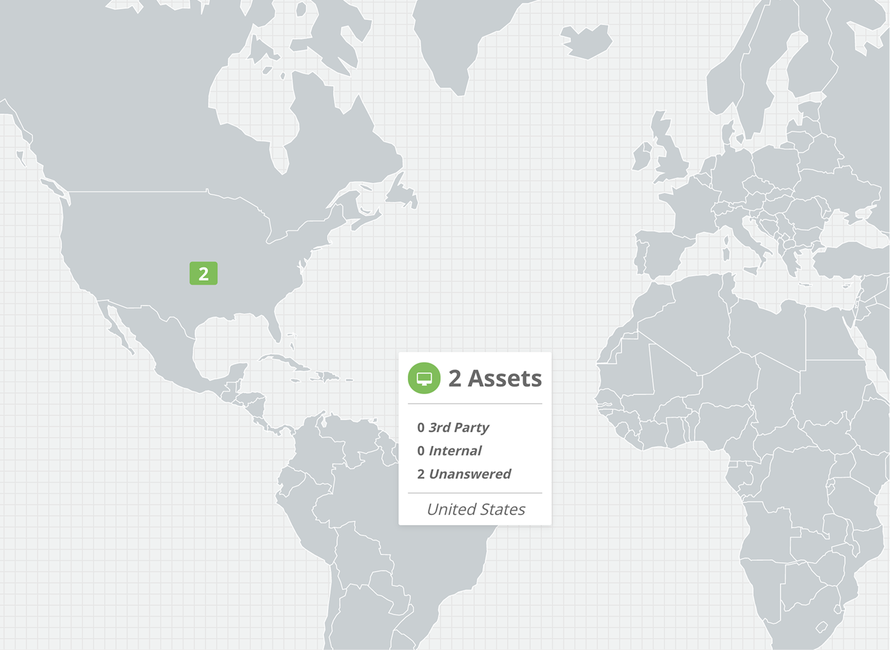
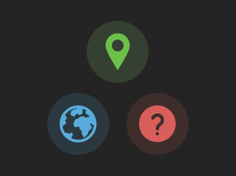
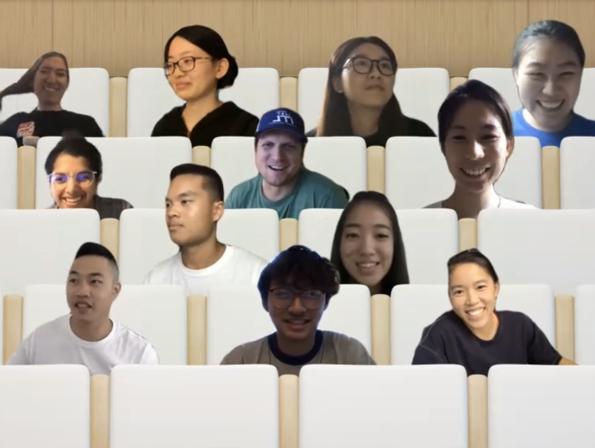

Summer 2020, I worked remotely for OneTrust as sole UX Design intern. I was so thrilled to have been granted the opportunity to work in a team that helped the company become the #1 fastest growing company in the U.S., especially during the pandemic! Going in the program, I was definitely not familiar with the data privacy industry, let alone designing for it, so the knowledge and experience I've gained during the 10-week course was priceless.
Employment Timeline
June - August 2020
10 weeks
Supervisors
JJ Zhao
Brett Curtis
Responsibilities
I was responsible for redesigning OneTrust’s asset map, which was the main project I focused on throughout the course of the internship. I did the end-to-end design process including user research, presenting the key problem areas, presenting concepts from low-fidelity to high-fidelity, and user testing. I also assisted in creating task flows for OneTrust’s internal email template builder and creating cookie banner mockups to present to OneTrust’s clients.
All of the asset map project details are available in this process deck.
Learning Outcomes
It’s been a while since I’ve completed this internship project, but if I were to redo the project or given more time, there are some things that I would have done differently now that I have learned more about design.

Map Interactions
I would have explored more interactions and nuances within the map itself in addition to task flows. There were some cases I didn’t take into account, for example, not all countries are visible from a world map and even if they are, the area for users to click on it may be too small. For users who are trying to zoom in on a country, clicking on the country may not be the most optimal method.
There’s also interactions such as zooming in and out and panning that I could have explored more - would users accidentally zoom in on the browser instead of the map if they use the pinch gesture? Would the asset locations become more granular as users zoom in?

Expand the User Journey
During this project, I focused on tasks users would do while they’re in the map visualization as well as reporting. If I had more time, I would have considered how users would populate the asset map and make sure their data is accurately shown.
How would users start putting in their data when they start? The map would be blank if there’s no data. If users see a bunch of assets with unknown locations on the map, how can they go about updating that information?

Check in with Devs Early
I was grateful to have gotten feedback and critique from fellow designers for every round of design iterations. However, I could have checked in with the engineers early even though the concept is far from finalized. During this internship, it turned out to be not so easy to pull and display the data for the map on the development side.
If I had checked in with the development side earlier, I would have been able to explore the map component more, going back to my first point. The engineering side would know what kind of interactions are feasible within this map component and it would have sparked many ideas if I discussed with them early on.